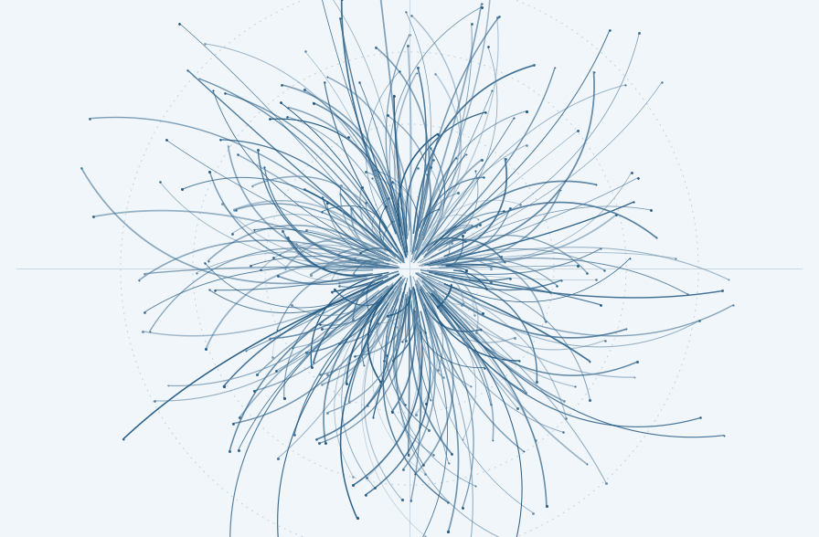
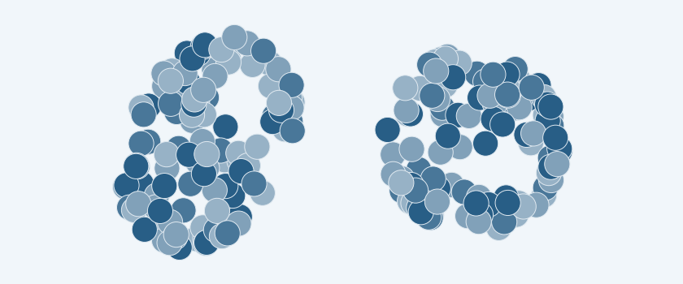
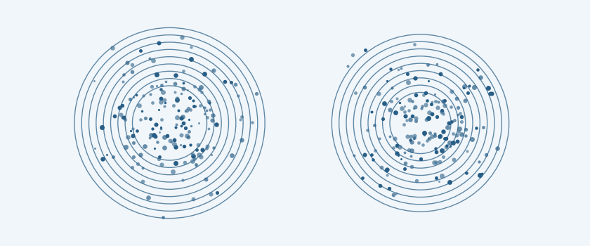

Research overview
My research probes the quark-gluon plasma (QGP), the primordial state of matter that filled the Universe microseconds after the Big Bang. By colliding heavy nuclei at nearly the speed of light, we recreate tiny droplets of this "quark soup" and study its properties, such as its viscosity, its speed of sound and how it flows collectively. The same collisions can also be used to image the shapes of the colliding atomic nuclei.
Selected research
All 13 studies →
ATLAS · Physical Review Letters · 2026
The collective nature of radial flow
Particles separated in rapidity share a common fluctuation in transverse momentum.

STAR · Nature · 2024
Imaging the shape of uranium
Uranium and gold collisions reveal the elongation and triaxiality of uranium-238.

ATLAS · Physical Review Letters · 2024
Momentum fluctuations in head-on collisions
Ultra-central lead collisions separate the contributions from collision geometry and intrinsic fluctuations.
Current work in ALICE
I’m studying how radial-flow fluctuations vary along the beam direction. Comparing particles at different rapidities lets us test how far these fluctuations extend.